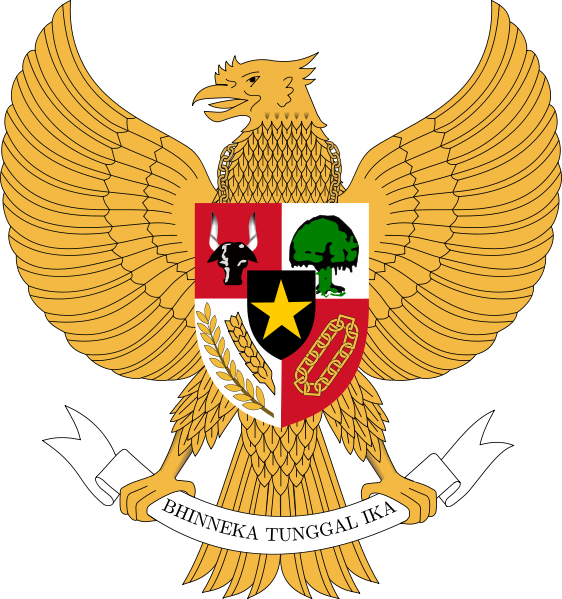

masukan kata pencarian
cari
User TKB

masukan kata pencarian
cari
User TKB

 |
Naskah Asli |
|
Lampiran |
|
Cetak |
PERATURAN MENTERI KEUANGAN NOMOR : 120/PMK.010/2021
PERUBAHAN KEDUA ATAS PERATURAN MENTERI KEUANGAN NOMOR 31/PMK.010/2021 TENTANG PAJAK PENJUALAN ATAS BARANG MEWAH ATAS PENYERAHAN BARANG KENA PAJAK YANG TERGOLONG MEWAH BERUPA KENDARAAN BERMOTOR TERTENTU YANG DITANGGUNG PEMERINTAH TAHUN ANGGARAN 2021
Status Peraturan : Aktif
|
 MENTERI KEUANGAN REPUBLIK INDONESIA |
|
|
PERATURAN MENTERI KEUANGAN REPUBLIK INDONESIA
NOMOR 120/PMK.010/2021
TENTANG
DENGAN RAHMAT TUHAN YANG MAHA ESA
MENTERI KEUANGAN REPUBLIK INDONESIA, |
| Menimbang | : | a. | bahwa untuk tetap menjaga antusiasme dan mempertahankan daya beli masyarakat di sektor industri kendaraan bermotor guna mendorong dan mempercepat pemulihan ekonomi nasional, perlu dilakukan penyesuaian kebijakan di bidang perpajakan mengenai Pajak Penjualan atas Barang Mewah atas penyerahan barang kena pajak yang tergolong mewah berupa kendaraan bermotor tertentu yang ditanggung Pemerintah tahun anggaran 2021; | ||||||||||||||||||||||||||||||||||||||||||||||
| b. | bahwa Peraturan Menteri Keuangan Nomor 31/PMK.010/2021 tentang Pajak Penjualan atas Barang Mewah atas Penyerahan Barang Kena Pajak yang Tergolong Mewah berupa Kendaraan Bermotor Tertentu yang Ditanggung Pemerintah Tahun Anggaran 2021 sebagaimana telah diubah dengan Peraturan Menteri Keuangan Nomor 77/PMK.010/2021 tentang Perubahan atas Peraturan Menteri Keuangan Nomor 31/PMK.010/2021 tentang Pajak Penjualan atas Barang Mewah atas Penyerahan Barang Kena Pajak yang Tergolong Mewah berupa Kendaraan Bermotor Tertentu yang Ditanggung Pemerintah Tahun Anggaran 2021 belum dapat menampung kebutuhan penyesuaian kebijakan di bidang perpajakan sehingga perlu diubah; | ||||||||||||||||||||||||||||||||||||||||||||||||
| c. | bahwa berdasarkan pertimbangan sebagaimana dimaksud dalam huruf a dan huruf b, perlu menetapkan Peraturan Menteri Keuangan tentang Perubahan Kedua atas Peraturan Menteri Keuangan Nomor 31/PMK.010/2021 tentang Pajak Penjualan atas Barang Mewah atas Penyerahan Barang Kena Pajak yang Tergolong Mewah berupa Kendaraan Bermotor Tertentu yang Ditanggung Pemerintah Tahun Anggaran 2021; | ||||||||||||||||||||||||||||||||||||||||||||||||
| Mengingat | : | 1. | Pasal 17 ayat (3) Undang-Undang Dasar Negara Republik Indonesia Tahun 1945; | ||||||||||||||||||||||||||||||||||||||||||||||
| 2. | Undang-Undang Nomor 8 Tahun 1983 tentang Pajak Pertambahan Nilai Barang dan Jasa dan Pajak Penjualan atas Barang Mewah (Lembaran Negara Republik Indonesia Nomor 51 Tahun 1983, Tambahan Lembaran Negara Republik Indonesia Nomor 3264) sebagaimana telah beberapa kali diubah terakhir dengan Undang-Undang Nomor 42 Tahun 2009 tentang Perubahan Ketiga atas Undang-Undang Nomor 8 Tahun 1983 tentang Pajak Pertambahan Nilai Barang dan Jasa dan Pajak Penjualan atas Barang Mewah (Lembaran Negara Republik Indonesia Tahun 2009 Nomor 150, Tambahan Lembaran Negara Republik Indonesia Nomor 5069); | ||||||||||||||||||||||||||||||||||||||||||||||||
| 3. | Undang-Undang Nomor 17 Tahun 2003 tentang Keuangan Negara (Lembaran Negara Republik Indonesia Tahun 2003 Nomor 47, Tambahan Lembaran Negara Republik Indonesia Nomor 4286); | ||||||||||||||||||||||||||||||||||||||||||||||||
| 4. | Undang-Undang Nomor 39 Tahun 2008 tentang Kementerian Negara (Lembaran Negara Republik Indonesia Tahun 2008 Nomor 166, Tambahan Lembaran Negara Republik Indonesia Nomor 4916); | ||||||||||||||||||||||||||||||||||||||||||||||||
| 5. | Undang-Undang Nomor 2 Tahun 2020 tentang Penetapan Peraturan Pemerintah Pengganti Undang-Undang Nomor 1 Tahun 2020 tentang Kebijakan Keuangan Negara dan Stabilitas Sistem Keuangan untuk Penanganan Pandemi Corona Virus Disease 2019 (COVID-19) dan/atau dalam rangka menghadapi Ancaman yang Membahayakan Perekonomian Nasional dan/atau Stabilitas Sistem Keuangan menjadi Undang-Undang (Lembaran Negara Republik Indonesia Tahun 2020 Nomor 134, Tambahan Lembaran Negara Republik Indonesia Nomor 6516); | ||||||||||||||||||||||||||||||||||||||||||||||||
| 6. | Undang-Undang Nomor 11 Tahun 2020 tentang Cipta Kerja (Lembaran Negara Republik Indonesia Tahun 2020 Nomor 245, Tambahan Lembaran Negara Republik Indonesia Nomor 6573; | ||||||||||||||||||||||||||||||||||||||||||||||||
| 7. | Peraturan Presiden Nomor 57 Tahun 2020 tentang Kementerian Keuangan (Lembaran Negara Republik Indonesia Tahun 2020 Nomor 98); | ||||||||||||||||||||||||||||||||||||||||||||||||
| 8. | Peraturan Menteri Keuangan Nomor 118/PMK.01/2021 tentang Organisasi dan Tata Kerja Kementerian Keuangan (Berita Negara Republik Indonesia Tahun 2021 Nomor 1031); | ||||||||||||||||||||||||||||||||||||||||||||||||
| 9. | Peraturan Menteri Keuangan Nomor 127/PMK.02/2020 tentang Tata Cara Penggunaan dan Pergeseran Anggaran pada Bagian Anggaran Bendahara Umum Negara Pengelolaan Belanja Lainnya (BA 999.08) (Berita Negara Republik Indonesia Tahun 2020 Nomor 1034) sebagaimana telah beberapa kali diubah terakhir dengan Peraturan Menteri Keuangan Nomor 23/PMK.02/2021 tentang Perubahan atas Peraturan Menteri Keuangan Nomor 127/PMK.02/2020 tentang Tata Cara Penggunaan dan Pergeseran Anggaran pada Bagian Anggaran Bendahara Umum Negara Pengelolaan Belanja Lainnya (BA 999.08) (Berita Negara Republik Indonesia Tahun 2021 Nomor 201); | ||||||||||||||||||||||||||||||||||||||||||||||||
| 10. | Peraturan Menteri Keuangan Nomor 208/PMK.02/2020 tentang Tata Cara Revisi Anggaran Tahun Anggaran 2021 (Berita Negara Republik Indonesia Tahun 2020 Nomor 1561); | ||||||||||||||||||||||||||||||||||||||||||||||||
| 11. | Peraturan Menteri Keuangan Nomor 31/PMK.010/2021 tentang Pajak Penjualan atas Barang Mewah atas Penyerahan Barang Kena Pajak yang Tergolong Mewah berupa Kendaraan Bermotor Tertentu yang Ditanggung Pemerintah Tahun Anggaran 2021 (Berita Negara Republik Indonesia Tahun 2021 Nomor 249) sebagaimana telah diubah dengan Peraturan Menteri Keuangan Nomor 77/PMK.010/2021 tentang Perubahan atas Peraturan Menteri Keuangan Nomor 31/PMK.010/2021 tentang Pajak Penjualan atas Barang Mewah atas Penyerahan Barang Kena Pajak yang Tergolong Mewah berupa Kendaraan Bermotor Tertentu yang Ditanggung Pemerintah Tahun Anggaran 2021 (Berita Negara Republik Indonesia Tahun 2021 Nomor 742); | ||||||||||||||||||||||||||||||||||||||||||||||||
|
MEMUTUSKAN: |
|||||||||||||||||||||||||||||||||||||||||||||||||
| Menetapkan | : | PERATURAN MENTERI KEUANGAN TENTANG PERUBAHAN KEDUA ATAS PERATURAN MENTERI KEUANGAN NOMOR 31/PMK.010/2021 TENTANG PAJAK PENJUALAN ATAS BARANG MEWAH ATAS PENYERAHAN BARANG KENA PAJAK YANG TERGOLONG MEWAH BERUPA KENDARAAN BERMOTOR TERTENTU YANG DITANGGUNG PEMERINTAH TAHUN ANGGARAN 2021. | |||||||||||||||||||||||||||||||||||||||||||||||
| Pasal I | |||||||||||||||||||||||||||||||||||||||||||||||||
| Beberapa ketentuan dalam Peraturan Menteri Keuangan Nomor 31/PMK.010/2021 tentang Pajak Penjualan atas Barang Mewah atas Penyerahan Barang Kena Pajak yang Tergolong Mewah berupa Kendaraan Bermotor Tertentu yang Ditanggung Pemerintah Tahun Anggaran 2021 (Berita Negara Republik Indonesia Tahun 2021 Nomor 249) sebagaimana telah diubah dengan Peraturan Menteri Keuangan Nomor 77/PMK.010/2021 tentang Perubahan atas Peraturan Menteri Keuangan Nomor 31/PMK.010/2021 tentang Pajak Penjualan atas Barang Mewah atas Penyerahan Barang Kena Pajak yang Tergolong Mewah berupa Kendaraan Bermotor Tertentu yang Ditanggung Pemerintah Tahun Anggaran 2021 (Berita Negara Republik Indonesia Tahun 2021 Nomor 742) diubah sebagai berikut: | |||||||||||||||||||||||||||||||||||||||||||||||||
| 1. | Ketentuan ayat (1) huruf c, ayat (2) huruf b, dan ayat (3) huruf b Pasal 5 diubah, sehingga berbunyi sebagai berikut: | ||||||||||||||||||||||||||||||||||||||||||||||||
| Pasal 5 | |||||||||||||||||||||||||||||||||||||||||||||||||
| (1) | PPnBM yang terutang atas penyerahan kendaraan bermotor tertentu yang ditanggung oleh Pemerintah sebagaimana dimaksud dalam Pasal 2 huruf a dan huruf b, atas kendaraan bermotor yang memenuhi persyaratan sebagaimana dimaksud dalam Pasal 4, diberikan sebesar: | ||||||||||||||||||||||||||||||||||||||||||||||||
| a. | 100% (seratus persen) dari PPnBM yang terutang untuk Masa Pajak April 2021 sampai dengan Masa Pajak Mei 2021; | ||||||||||||||||||||||||||||||||||||||||||||||||
| b. | 100% (seratus persen) dari PPnBM yang terutang untuk Masa Pajak Juni 2021 sampai dengan Masa Pajak Agustus 2021; dan | ||||||||||||||||||||||||||||||||||||||||||||||||
| c. | 100% (seratus persen) dari PPnBM yang terutang untuk Masa Pajak September 2021 sampai dengan Masa Pajak Desember 2021. | ||||||||||||||||||||||||||||||||||||||||||||||||
| (2) | PPnBM yang terutang atas penyerahan kendaraan bermotor tertentu yang ditanggung oleh Pemerintah sebagaimana dimaksud dalam Pasal 2 huruf c, atas kendaraan bermotor yang memenuhi persyaratan sebagaimana dimaksud dalam Pasal 4 diberikan sebesar: | ||||||||||||||||||||||||||||||||||||||||||||||||
| a. | 50% (lima puluh persen) dari PPnBM yang terutang untuk Masa Pajak April 2021 sampai dengan Masa Pajak Agustus 2021; dan | ||||||||||||||||||||||||||||||||||||||||||||||||
| b. | 50% (lima puluh persen) dari PPnBM yang terutang untuk Masa Pajak September 2021 sampai dengan Masa Pajak Desember 2021. | ||||||||||||||||||||||||||||||||||||||||||||||||
| (3) | PPnBM yang terutang atas penyerahan kendaraan bermotor tertentu yang ditanggung oleh Pemerintah sebagaimana dimaksud dalam Pasal 2 huruf d, atas kendaraan bermotor yang memenuhi persyaratan sebagaimana dimaksud dalam Pasal 4 diberikan sebesar: | ||||||||||||||||||||||||||||||||||||||||||||||||
| a. | 25% (dua puluh lima persen) dari PPnBM yang terutang untuk Masa Pajak April 2021 sampai dengan Masa Pajak Agustus 2021; dan | ||||||||||||||||||||||||||||||||||||||||||||||||
| b. | 25% (dua puluh lima persen) dari PPnBM yang terutang untuk Masa Pajak September 2021 sampai dengan Masa Pajak Desember 2021. | ||||||||||||||||||||||||||||||||||||||||||||||||
| 2. | Di antara Pasal 11B dan Pasal 12 disisipkan 3 (tiga) pasal, yakni Pasal 11 C, Pasal 11D, dan Pasal 11 E sehingga berbunyi sebagai berikut: | ||||||||||||||||||||||||||||||||||||||||||||||||
| Pasal 11C | |||||||||||||||||||||||||||||||||||||||||||||||||
| Ketentuan besaran PPnBM yang terutang atas penyerahan kendaraan bermotor tertentu yang ditanggung oleh Pemerintah sebagaimana dimaksud dalam Pasal 5 ayat (1) huruf c, ayat (2) huruf b, dan ayat (3) huruf b terhitung mulai tanggal 1 September 2021, mengikuti ketentuan dalam Peraturan Menteri ini. | |||||||||||||||||||||||||||||||||||||||||||||||||
| Pasal 11D | |||||||||||||||||||||||||||||||||||||||||||||||||
| (1) | Faktur Pajak yang telah dibuat atas penyerahan kendaraan bermotor tertentu untuk Masa Pajak September 2021 dengan menggunakan besaran PPnBM yang ditanggung Pemerintah sebagaimana dimaksud dalam Pasal 5 ayat (1) huruf c, ayat (2) huruf b, dan ayat (3) huruf b Peraturan Menteri Keuangan Nomor 31/PMK.010/2021 tentang Pajak Penjualan atas Barang Mewah atas Penyerahan Barang Kena Pajak yang Tergolong Mewah berupa Kendaraan Bermotor Tertentu yang Ditanggung Pemerintah Tahun Anggaran 2021 sebagaimana telah diubah dengan Peraturan Menteri Keuangan Nomor 77/PMK.010/2021 tentang Perubahan atas Peraturan Menteri Keuangan Nomor 31/PMK.010/2021 tentang Pajak Penjualan atas Barang Mewah atas Penyerahan Barang Kena Pajak yang Tergolong Mewah berupa Kendaraan Bermotor Tertentu yang Ditanggung Pemerintah Tahun Anggaran 2021, dilakukan penggantian Faktur Pajak. | ||||||||||||||||||||||||||||||||||||||||||||||||
| (2) | PPnBM dan/atau kelebihan Pajak Pertambahan Nilai yang telah dipungut atas penyerahan sebagaimana dimaksud pada ayat (1), dikembalikan oleh Pengusaha Kena Pajak yang melakukan pemungutan. | ||||||||||||||||||||||||||||||||||||||||||||||||
| Pasal 11E | |||||||||||||||||||||||||||||||||||||||||||||||||
| Pada saat Peraturan Pemerintah Nomor 73 Tahun 2019 tentang Barang Kena Pajak yang Tergolong Mewah Berupa Kendaraan Bermotor yang Dikenai Pajak Penjualan atas Barang Mewah sebagaimana telah diubah dengan Peraturan Pemerintah Nomor 74 Tahun 2021 tentang Perubahan atas Peraturan Pemerintah Nomor 73 Tahun 2019 tentang Barang Kena Pajak yang Tergolong Mewah Berupa Kendaraan Bermotor yang Dikenai Pajak Penjualan atas Barang Mewah mulai berlaku, pemberian fasilitas PPnBM yang terutang atas penyerahan kendaraan bermotor tertentu ditanggung oleh Pemerintah untuk tahun anggaran 2021 berdasarkan pengelompokan sebagaimana dimaksud dalam Pasal 2 masih berlaku sampai dengan berakhirnya pemberian fasilitas berdasarkan Peraturan Menteri ini. | |||||||||||||||||||||||||||||||||||||||||||||||||
| Pasal II | |||||||||||||||||||||||||||||||||||||||||||||||||
| Peraturan Menteri ini mulai berlaku pada tanggal diundangkan | |||||||||||||||||||||||||||||||||||||||||||||||||
| Agar setiap orang mengetahuinya, memerintahkan pengundangan Peraturan Menteri ini dengan penempatannya dalam Berita Negara Republik Indonesia. | |||||||||||||||||||||||||||||||||||||||||||||||||
|
Ditetapkan di Jakarta pada tanggal 13 September 2021 MENTERI KEUANGAN REPUBLIK INDONESIA, ttd. SRI MULYANI INDRAWATI |
|
|
Diundangkan di Jakarta pada tanggal 13 September 2021 DIREKTUR JENDERAL PERATURAN PERUNDANG-UNDANGAN KEMENTERIAN HUKUM DAN HAK ASASI MANUSIA REPUBLIK INDONESIA, ttd. BENNY RIYANTO |
|
| BERITA NEGARA REPUBLIK INDONESIA TAHUN 2021 NOMOR 1038 | |
Peraturan terkait :
| 1. | UNDANG-UNDANG NOMOR 8 TAHUN 1983 TENTANG PAJAK PERTAMBAHAN NILAI BARANG DAN JASA DAN PAJAK PENJUALAN ATAS BARANG MEWAH |
| 2. | UNDANG-UNDANG NOMOR 17 TAHUN 2003 TENTANG KEUANGAN NEGARA |
| 3. | UNDANG-UNDANG NOMOR 39 TAHUN 2008 TENTANG KEMENTRIAN NEGARA |
| 4. | UNDANG-UNDANG NOMOR 42 TAHUN 2009 TENTANG PERUBAHAN KETIGA ATAS UNDANG-UNDANG NOMOR 8 TAHUN 1983 TENTANG PAJAK PERTAMBAHAN NILAI BARANG DAN JASA DAN PAJAK PENJUALAN ATAS BARANG MEWAH |
| 5. | UNDANG-UNDANG NOMOR 2 TAHUN 2020 TENTANG PENETAPAN PERATURAN PEMERINTAH PENGGANTI UNDANG-UNDANG NOMOR 1 TAHUN 2020 TENTANG KEBIJAKAN KEUANGAN NEGARA DAN STABILITAS SISTEM KEUANGAN UNTUK PENANGANAN PANDEMI CORONA VIRUS DISEASE 2019 (COVID-19) DAN/ATAU DALAM RANGKA MENGHADAPI ANCAMAN YANG MEMBAHAYAKAN PEREKONOMIAN NASIONAL DAN/ATAU STABILITAS SISTEM KEUANGAN MENJADI UNDANG-UNDANG |
| 6. | UNDANG-UNDANG NOMOR 11 TAHUN 2020 TENTANG CIPTA KERJA (KLASTER KEMUDAHAN BERUSAHA BIDANG PERPAJAKAN) |
| 7. | PERATURAN PEMERINTAH PENGGANTI UNDANG-UNDANG NOMOR 1 TAHUN 2020 TENTANG KEBIJAKAN KEUANGAN NEGARA DAN STABILITAS SISTEM KEUANGAN UNTUK PENANGANAN PANDEMI CORONA VIRUS DISEASE 2019 (COVID-19) DAN/ATAU DALAM RANGKA MENGHADAPI ANCAMAN YANG MEMBAHAYAKAN PEREKONOMIAN NASIONAL DAN/ATAU STABILITAS SISTEM KEUANGAN |
| 8. | PERATURAN PRESIDEN NOMOR 57 TAHUN 2020 TENTANG KEMENTRIAN KEUANGAN |
| 9. | PERATURAN MENTERI KEUANGAN NOMOR 31/PMK.010/2021 TENTANG PAJAK PENJUALAN ATAS BARANG MEWAH ATAS PENYERAHAN BARANG KENA PAJAK YANG TERGOLONG MEWAH BERUPA KENDARAAN BERMOTOR TERTENTU YANG DITANGGUNG PEMERINTAH TAHUN ANGGARAN 2021 |
| 10. | PERATURAN MENTERI KEUANGAN NOMOR 77/PMK.010/2021 TENTANG PERUBAHAN ATAS PERATURAN MENTERI KEUANGAN NOMOR 31/PMK.010/2021 TENTANG PAJAK PENJUALAN ATAS BARANG MEWAH ATAS PENYERAHAN BARANG KENA PAJAK YANG TERGOLONG MEWAH BERUPA KENDARAAN BERMOTOR TERTENTU YANG DITANGGUNG PEMERINTAH TAHUN ANGGARAN 2021 |
Historis Peraturan :
| 1. | UNDANG-UNDANG NOMOR 8 TAHUN 1983 TENTANG PAJAK PERTAMBAHAN NILAI BARANG DAN JASA DAN PAJAK PENJUALAN ATAS BARANG MEWAH |
| 2. | UNDANG-UNDANG NOMOR 17 TAHUN 2003 TENTANG KEUANGAN NEGARA |